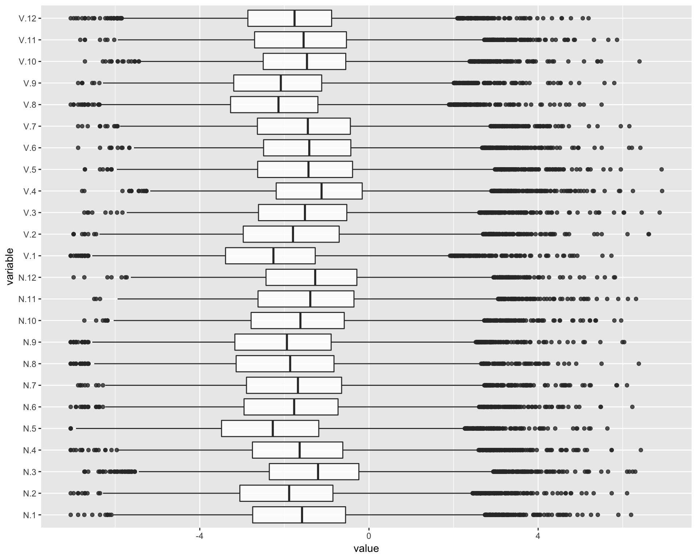
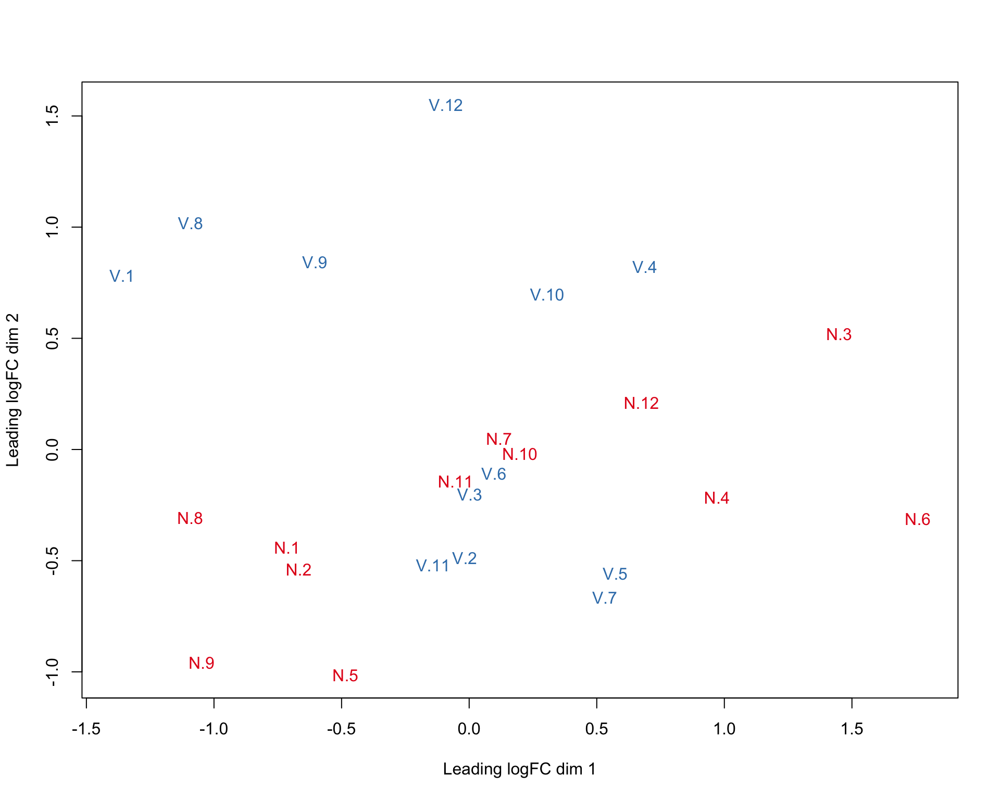
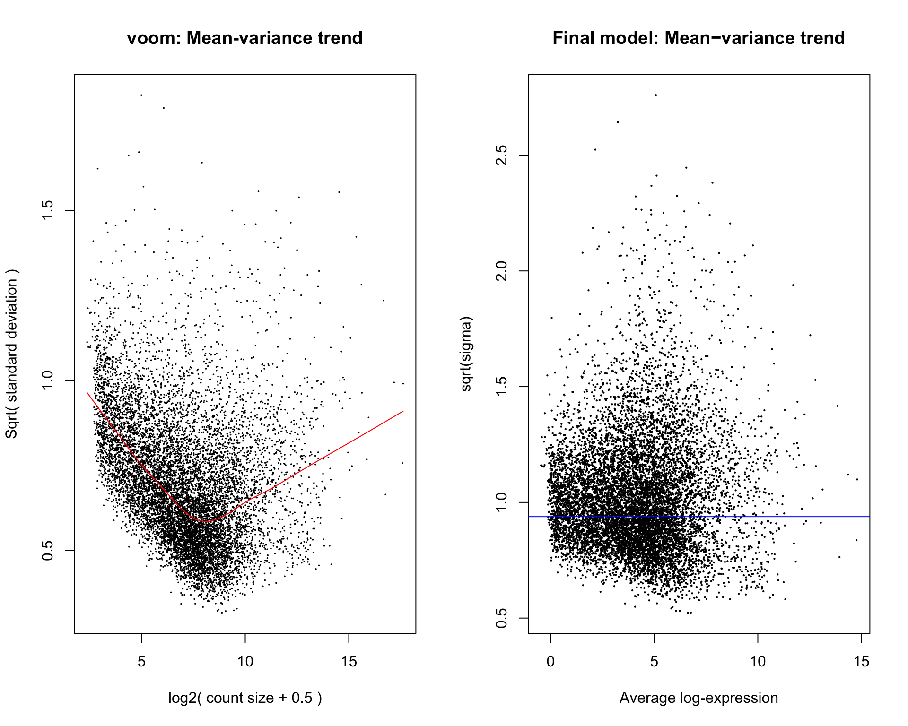

Try new paper (https://www.bioconductor.org/help/workflows/RNAseq123/)
library(limma)
library(Glimma)
library(GGally)
library(ggplot2)
library(edgeR)
thisPath <- getwd()
beeCounts <- readRDS("../data/data.Rds")
beeCounts <- as.matrix(beeCounts)
x <- DGEList(counts=beeCounts)
group <- factor(c(rep("N",12), rep("V",12)))
x$samples$group <- groupTransform and remove low counts.
cpm <- cpm(x)
nRep = length(lapply(colnames(beeCounts), function (x) unlist(strsplit(x, "[.]"))[1])) / length(unique(lapply(colnames(beeCounts), function (x) unlist(strsplit(x, "[.]"))[1])))
keep.exprs <- rowSums(cpm>1)>=nRep # tried filtering up to 24 and not much difference
x <- x[keep.exprs,, keep.lib.sizes=FALSE] # 15,314 to 10,654
dim(x)[1] 9971 24x <- calcNormFactors(x, method = "TMM")Make boxplots
ggparcoord(data.frame(log(x[[1]]/colMeans(x[[1]]))), columns=1:24, alphaLines=0, boxplot=TRUE, scale="globalminmax") + coord_flip()Warning: Removed 174 rows containing non-finite values (stat_boxplot).
Create MDS plots
library(RColorBrewer)
lcpm <- cpm(x, log=TRUE)
par(mfrow=c(1,2))
col.group <- group
levels(col.group) <- brewer.pal(nlevels(col.group), "Set1")Warning in brewer.pal(nlevels(col.group), "Set1"): minimal value for n is 3, returning requested palette with 3 different levelscol.group <- as.character(col.group)plotMDS(lcpm, labels=colnames(lcpm), col=col.group)
Create design matrix. There are many ways to setup a design matrix. Here, we removed the intercept from group (the first factor). This allows us to do contrasts with group more easily.
design <- model.matrix(~0+group)
colnames(design) <- gsub("group", "", colnames(design))
contr.matrix <- makeContrasts(
N_V = N-V,
levels = colnames(design))par(mfrow=c(1,2))
v <- voom(x, design, plot=TRUE)
vfit <- lmFit(v, design)
vfit <- contrasts.fit(vfit, contrasts=contr.matrix)
efit <- eBayes(vfit)
plotSA(efit, main="Final model: Mean−variance trend")
For a quick look at differential expression levels, the number of significantly up- and down-regulated genes can be summarised in a table. Significance is defined using an adjusted p-value cutoff that is set at 5% by default. For the comparison between expression levels in basal and LP, 4,127 genes are found to be down-regulated in basal relative to LP and 4,298 genes are up-regulated in basal relative to LP – a total of 8,425 DE genes.
summary(decideTests(efit)) N_V
Down 0
NotSig 9971
Up 0pairNames <- colnames(contr.matrix)
metrics <- list()
for (i in 1:length(pairNames)) {
temp <- topTreat(efit, coef=i, n=Inf)
temp <- cbind(ID=rownames(temp), temp)
temp$ID = as.character(temp$ID)
metrics[[ pairNames[i] ]] <- temp
}Save the data
saveRDS(metrics, file="dataMetrics.Rds")
saveRDS(x, file="data.Rds")